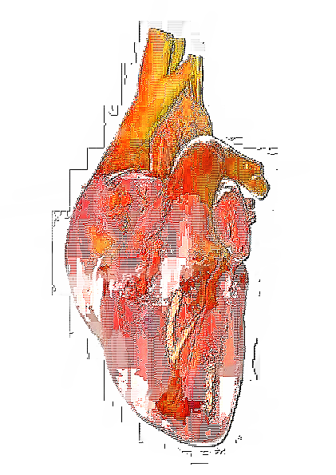

This page is for documenting my current work on a personal project about heartbeats, music, & sub-intelligent instruments
031824 update
Note-detection-pd is a repository I created for realtime pitch detection of frequencies from
the user and networking the values to a pure data patch using UDP. The goal of the project is to open up
different ways of creating sounds. The goal is to create a pure data patch that will play complementary with
live music created by the performer.
Inside the repository you will find a python script for detecting pitch using pyaubio and sending it through a socket to pd.
As well as an example patch for receiving using netreceive.
future plans
The future goal of this project is to introduce heart monitors for detecting bpm. Then sending this data into pure data to play a bang every time the heart beats. This could be used in tandem for live music performance.